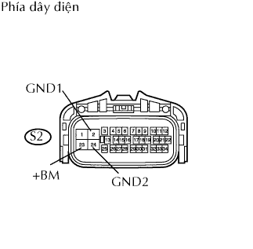

DTC C1251/51 Hở mạch trong mạch môtơ bơm. |
| Số mã DTC | Điều kiện phát hiện DTC | Khu vực nghi ngờ |
| C1251/51 | Khi một trong các điều kiện sau đây thỏa mãn:
|
|
| 1.CHỌN PHƯƠNG PHÁP CHẨN ĐOÁN |
Chọn phương pháp chẩn đoán.
| Phương pháp | Đi đến |
| Khi dùng máy chẩn đoán | A |
| Khi không dùng máy chẩn đoán | B |
|
| ||||
| A | |
| 2.THỰC HIỆN PHÉP THỬ KÍCH HOẠT BẰNG CÁCH DÙNG MÁY CHẨN ĐOÁN (RƠLE MÔTƠ ABS) |
Chọn thử kích hoạt, tạo ra lệnh điều khiển và sau đó kiểm tra rằng rơle môtơ ABS hoạt động.
| Hạng mục | Tình trạng xe / Thử chi tiết | Chú ý chẩn đoán |
| ABS Motor Relay | Bật rơle môtơ ABS ON / OFF | Có thể nghe thấy tiếng kêu hoạt động của môtơ |
|
| ||||
| NG | |
| 3.KIỂM TRA DÂY ĐIỆN (ECU ĐIỀU KHIỂN TRƯỢT - ẮC QUY VÀ MÁT THÂN XE) |
|  |
Ngắt giắc nối S2 của ECU.
Đo điện trở của giắc nối phía dây điện.
| Nối dụng cụ đo | Điều kiện tiêu chuẩn |
| S2-2 (GND1) - Mát thân xe | Dưới 1 Ω |
| S2-24 (GND2) - Mát thân xe | Dưới 1 Ω |
Đo điện áp của giắc nối phía dây điện.
| Nối dụng cụ đo | Điều kiện tiêu chuẩn |
| S2-23 (+BM) - Mát thân xe | 10 đến 14 V |
|
| ||||
| OK | ||
| ||